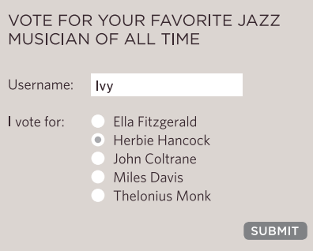
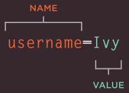

Se a intenção for adicionar uma caixa simples de pesquisa ou criar uma aplicação um pouco mais segura, o HTML fornece diversos elementos para coletar dados dos usuários. Aquele campo de busca do google é um bom exemplo de campo de preenchimento em um formulário, quando se está registrando em um site, ou fazendo compras online, etc.
Existe várias maneias de controlar a informação que será coletada dos usuários que acessarem o site.
type="button" :
type="checkbox" :
type="color" :
type="date" :
type="datetime-local" :
type="email" :
type="file" :
type="hidden" :
type="image" :
type="month" :
type="number" :
type="password" :
type="radio" :
type="range" :
type="reset" :
type="search" :
type="submit" :
type="tel" :
type="text" :
type="time" :
type="url" :
type="week" :
São alguns tipos de Inputs que podem ser usados para pegar alguns dados dos usuários
Adicionando texto: O text input serve para campos de texto de uma linha apenas, tipo emails ou nomes. O password input, é autoexplicativo, funciona com uma caixa de texto que possui uma máscara para ocultar os caracteres. O text area, é um campo de texto multi-linhas, é bastante útil para mensagens ou comentários.
Fazendo escolhas: Radio buttons, Checkboxes, Drop-down boxes, são alguns dos exemplos que podem ser usados para selecionar algo em um menu restrito de possibilidades.
Enviando Formulários: Há várias maneiras de enviar um formulário, existe os Submit buttons, dá para fazer também por meio de um Image buttons que assume o papel de um submit button.
Enviando arquivos: usando file upload é possível que os usuários façam o upload de arquivos.
Um formulário pode ter vários controles de formulários(campos de preenchimentos de dados), cada um coletando informações diferentes. O servidor precisa saber qual parte dos dados inseridos corresponde a qual elemento do formulário.

Para diferenciar entre vários pedaços de dados inseridos, a informação é enviada do navegador para o servidor usando pares de name/value (nome e seu valor correspondente). Nesse exemplo, foi pedido para que o visitante colocasse seu nome e escolhesse seu músico de jazz favorito. O par name/value enviado ao servidor foi:
username=Ivy
vote=Herbie
Se o controle de formulário (campos de preenchimentos de dados) permite que o usuário ponha textos, então o value é qualquer coisa que a pessoa tenha digitado. Da mesma forma, se o formulário permite escolher entre opções fixas (ex: radio buttons, checkboxes ou drop-down lists), então o(a) autor(a) vai adicionar um código(específico) automárico para cada opção disponível.
Não se deve nunca mudar o nome de um campo de preenchimento de dados (form control) em uma página, a menos que se saiba que o código no servidor irá entender esse novo valor.